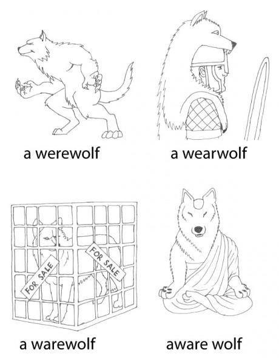
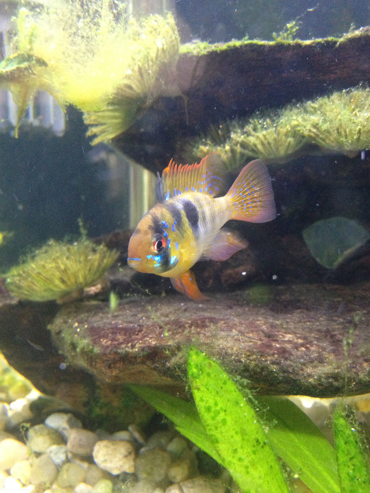
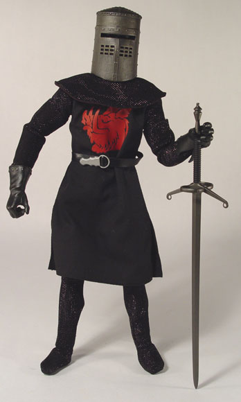
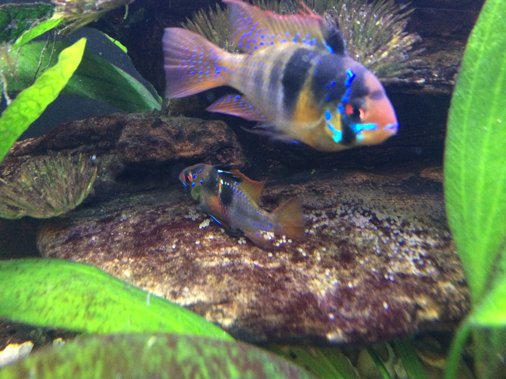
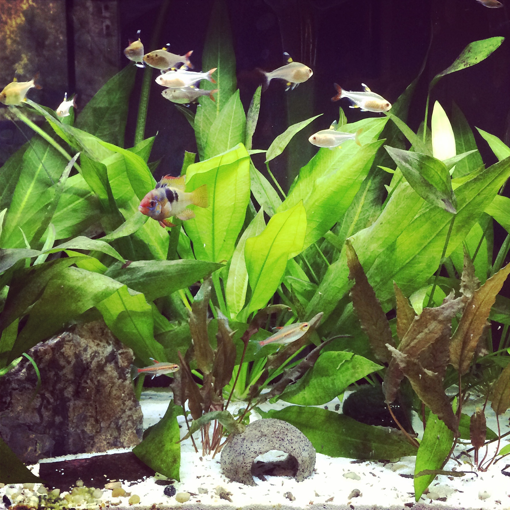
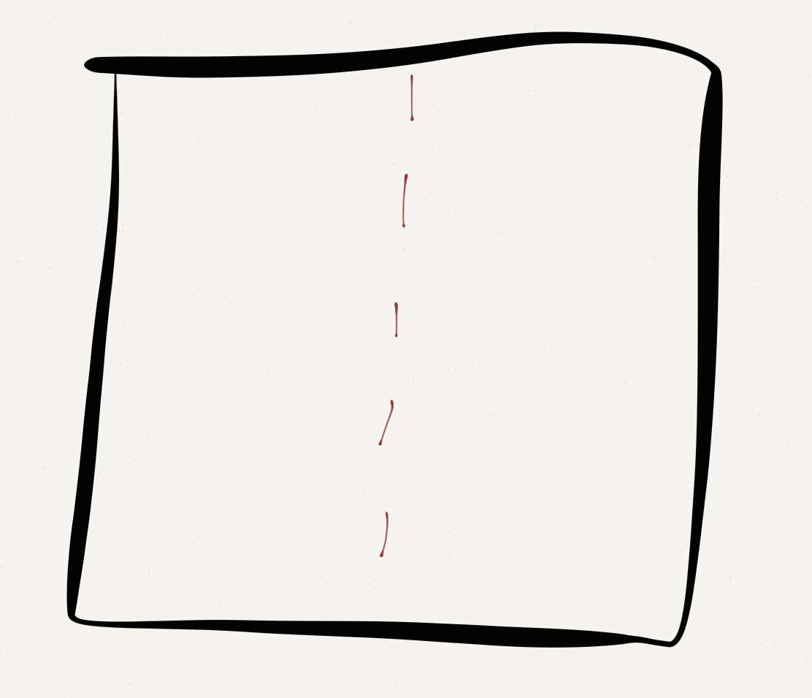
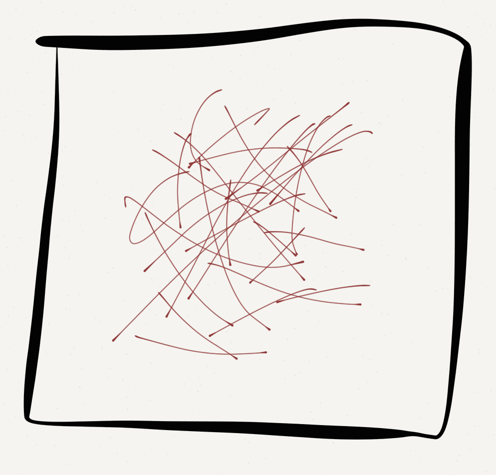
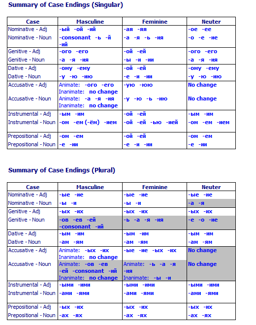
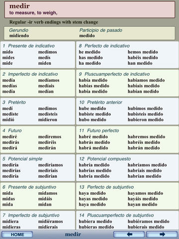

You’ll walk in, sit down, and begin the test
40 Scantron-based Multiple Choice questions, 1 short answer, one long answer
Plan to write 1/2 page (or less) for the long answer
You’ll have until 11:54 to complete the exam
Bring a Number 2 pencil!
If you miss the exam, you’ve either got a doctor’s note or a zero
Match languages to families
Match features to language families
Understand linguistic concepts
Analyze a very basic dataset
Bring a Number 2 pencil!
Repeat language-specific details
Remember how many people speak a given language
Remember sub-families outside of Indo-European
Plan on half a page maximum.
Concise and complete answers are very possible to some of the questions.
Remember, you’re showing your knowledge of the material, not trying to sell me anything.
Please skip the “Fusional Morphology is a really important part of language, and is perhaps the greatest phenomenon ever…” niceties :)
You’ve had the questions for almost two weeks. Make sure your thoughts are in order before you come in.
Eliminate the obviously wrong answers first
If you don’t have the answer, circle the contenders on your test sheet and come back.
Choose the best answer
Agglutinative Morphology
Ejective consonants
Scarcity of vowels
Ergative/Absolutive Case Systems
Templatic Morphology
Ewe has no Noun Classes, but Niger-Congo usually does
English has no grammatical gender, but Germanic usually does.
Chechen and Ingush have a bunch of vowels, but Caucasian languages usually don’t.
Few of these generalizations about families are always true.
Agglutinative Morphology
Ejective consonants
Scarcity of vowels
Ergative/Absolutive Case Systems
Templatic Morphology
Agglutinative Morphology
Ejective consonants
Scarcity of vowels
Ergative/Absolutive Case Systems
Even if “Scarcity of vowels” has some exceptions, “Templatic morphology” is not remotely associated with Caucasian.
“Scarcity of vowels” is not the answer you’re looking for.
We try to always give one great answer, even if some of the others seem iffy.
Let’s look at this from an outsider’s perspective
Adriano Celetano - Prisencolinensinainciusol
Very few languages use /ɹ/
We’ve got a bunch of ways to make it
Interdental sounds are fairly rare, too
They’re considered rude in many cultures
/ i, ɪ, e, ɛ, æ, ə, ʌ, ɑ, ɔ, ʊ, u /
/aj, oj, ej, ow, aw/
Few languages have us beat
All of this crazy is concealed by…

“gh” from “rough”
“o” from “women”
“ti” from “action”
Pronounced like “Fish”

Then, we use these sounds to do silly things in the rest of the language
I’ve got a conference [at/in] Hellems
*I’ve got a conference at Indiana
?I’ve got a conference at Indianapolis
I’ve got a conference at the Marriott in Indianapolis
I’ve got a meeting on Friday
I’ve got a meeting in August
I’ve got a meeting at 3pm
I’ve got a meeting during lunch
I’ve got a meeting ø next week
Fish.
Fish.

Fishes.

Leaf -> Leaves
Wife -> Wives
Staff -> ??
Staffs (rhymes with “graphs”)
Staffs (rhymes with “calves”)
Staves (rhyme with “caves”)
Stife (because English.)

Mouse -> Mice
Louse -> Lice
House -> Hice, right?
Spouse -> …

I have a car
*I have a sand.
* I ate an asparagus
I ate a french fry
I saw a raccoon on the road
I saw some raccoons on the road
I saw some raccoon on the road
Speaking of dead animals…
?I had cow.
?I had pig.
?I had deer
I had chicken.
I had lamb
I hugged three pigs, *I ate three porks
I bought some cows, I bought some beef
(Yet, Will has several beefs with Michael Bay)
A affix which is inserted into the middle of the word
Will I tell you what it is?
Cons-fucking-titutional
Consti-fucking-tutional
Constitu-fucking-tional
Constitution-fucking-al
“Missi-fucking-sippi”
“He’s a deon-fucking-tologist”
“Antidisestablishmen-fucking-tarianism”
It’s about time we learned the rule for that!
It ate my homework
It’s getting hot in here
It burns when I eat Habañeros
It sucks when Michael Bay remakes your childhood favorites
It’s about time we fix our writing system
Which means the same thing as “Should we do something about that?”
Go home English, you’re drunk.
When a verb has a different meaning when coupled with a particular preposition or particle
Cut in - To offer somebody a part of a venture
Cut out - To stop something, or remove somebody from a venture, or lose audio
Cut with - To adulterate a drug
Cut off - To cease financial support, or merge leaving too little space
Cut it - To suffice for a task
Cut up - To slice into small pieces
Cut down - To shorten something
Cut across/through - To shorten one’s route by traversing an open space
Cut on - To repeatedly make small cutting strokes at the periphery of an object
Cut back - To reduce an existing option or investment, travel back in story
Sometimes, we don’t know if we want the verb particle construction, or the preposition!


“… then she threw my lunch up on the roof”
“… then she threw up my lunch on the roof”
Buffalo buffalo Buffalo buffalo buffalo buffalo Buffalo buffalo.
This is a fully grammatical sentence
“New York bison whom other New York bison bully, themselves bully New York bison”.

It’s filled with irregularities, weirdnesses, odd constructions, and other silliness
… but that’s no different than any other language.
We’re simplifying languages left and right for this class
Partly because we don’t have the time
… and because if we didn’t, you’d run screaming


English is bat-poop cray-cray, in so many ways
… but so is every other language
That’s why we love them
Second language learners are fighting an uphill battle. Be kind!